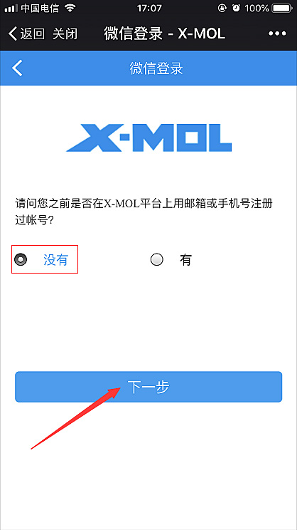
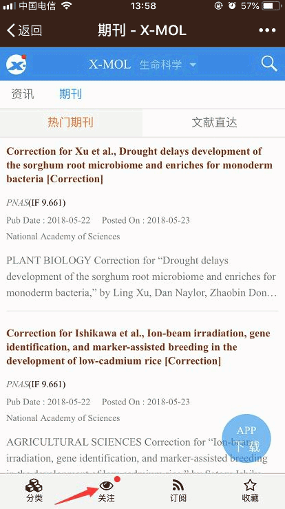
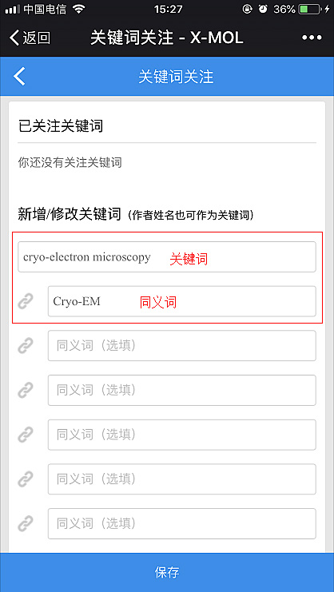

把每周文献追踪压缩成一次设置：我用 xmol 搭的论文自动抓取链
以前每周要花两三个小时手动翻期刊、搜关键词、存书签；现在在 xmol 上设好关注和高级检索条件，每天推送直接进 App，整理待读清单只要五分钟。
我每周固定要做一件事：追踪领域内的最新论文。说具体点——盯十来本核心期刊有没有新刊出、按几个关键词组合搜一轮、把值得读的挑出来存进待读清单。这事以前要三步：先分别去几本期刊的出版商网站翻目录，再跑 Google Scholar 按关键词组合搜一遍，最后把感兴趣的链接手动复制进 Notion 的待读库。每一轮下来两三个小时是底，而且经常断链——某本期刊出刊晚了我忘了补，或者 Scholar 搜出来的结果太杂、有用的混在一堆无关文献里。
这条链卡了我大半年，直到我把 xmol官网 插进了流程里。
旧流程的三个断点
先别急着换工具，得先想清楚原来的链到底断在哪：
- 跨平台太散：出版商网站、Google Scholar、Notion 三个地方来回切，每切一次就手动复制一次链接，少了三次手动复制其实就是少了三次出错的可能——复制错 DOI、漏贴摘要、或者干脆忘了存。
- 关键词不会收窄：在 Scholar 里搜
"电池 AND 固态" NOT 液态这种组合，每次都要重新拼语法，而且 Scholar 对高级检索的逻辑运算支持并不稳定，有时候 NOT 没生效，结果里混进来一堆液态电池的旧文献。 - 没有推送：每周主动去找和每天推到面前是两回事。前者靠意志力，后者靠习惯。我试过把 RSS 源接进邮箱，但出版商的 RSS 经常不及时更新， Scholar 又不提供 RSS。
这三个断点本质上是同一个问题：没有一个工具同时管"定期推送 + 逻辑检索 + 一键收藏"。
新流程：xmol 把三个环节接在一起
现在我的链条里，xmol 是中枢。具体接在哪几个点上：
第一步：注册登录——微信快捷登录最省事
注册是整条链的起点，但别在这步花太多时间。安装包从 官方下载 拿，装好之后我直接用微信快捷登录，一次点完就进了，省了记账号密码。登录入口在手机网页左上角那个灰色头像，App 里同样在个人中心位置。注册完立刻解锁了关注、收藏、关键词追踪这些核心功能——不登录这些都用不了，所以这步是必做的。

第二步：关注期刊——把十来本核心刊一次性加好
这步是"定期推送"的源头。进到 App 的底部工具栏，点「关注」，然后把我追踪领域内的期刊一本本加上去。每本期刊的信息页里都有个关注按钮，点一下就完事。设完之后，这些期刊一出新刊，App 就会推通知过来。
我试过两种加刊方式：直接在期刊页点关注，和从关注设置里批量搜刊名加。后者更快——如果你的目标期刊清单已经有了，直接搜名字批量加，比一本本翻快得多。

第三步：高级检索保存检索式——解决关键词收窄的问题
这步是整条链里最容易配错的环节，也是收益最大的。xmol 的高级检索支持 AND / OR / NOT 逻辑组合，可以同时指定作者、期刊、年份范围，具体条件参数在 xmol文档 里列得很清楚。我把之前在 Scholar 里每次手写的那套条件，在 xmol 的高级检索界面里配好之后，点「保存」存成一个检索式，下次直接调用，不用再重新拼。
举个实际的组合：(固态 AND 电解质) NOT 液态 加上"限定近五年、只看影响因子大于 5 的期刊"，一次宽泛搜索就收窄成一份定向清单。而且保存的检索式会自动追踪——只要有新文献匹配这个条件，也会推送到我的消息里。这相当于给关键词设了一个"自动雷达"。

第四步：推送进来直接收藏——少了手动复制这步
每天早上打开 App，推送列表里就是前一天匹配我关注条件的新论文。点进去看摘要，感兴趣的直接点收藏，进我的收藏夹。晚上整理待读清单的时候，打开 xmol 的收藏夹，把论文标题和 DOI 复制进 Notion——这步只花五分钟，因为要处理的内容已经被推送筛过一轮了，不会再混进无关文献。
两个最容易断链的细节
上面四步看起来简单，但实际跑下来我发现有两个地方特别容易出问题，提前说一下：
第一，通知权限一定要开。很多人注册完 App 就直接关后台了，没开推送权限，等于整条推送链没接电。iPhone 上第一次打开 App 的时候系统会弹通知权限请求，选「允许」就行；如果当时误点了拒绝，去系统设置里手动开一下也能补回来。
第二，高级检索的逻辑运算别配错括号。xmol 的高级检索支持括号嵌套，(A AND B) NOT C 和 A AND (B NOT C) 结果完全不一样。我一开始配的时候没加括号，结果搜出来一堆 A AND B 的结果里还混着 C，后来去 xmol文档翻了一下高级检索的示例才弄明白。建议第一次配完之后先跑一遍看结果数量，跟预期差太多肯定是逻辑符号放错了。
效果和边界
跑了一个月，实际效果：以前每周花两三个小时做的事，现在每天早上看五分钟推送、晚上整理五分钟收藏夹，总共十分钟。少了三次手动复制（出版商网站→Scholar→Notion 的跨站复制），也不会因为哪本期刊出刊晚就漏掉。
但这套流程不是什么场景都划算。如果你只是偶尔查一次文献，或者只需要某一本期刊的某一篇特定论文，那直接搜更快，犯不上注册一套账号、设一整套关注条件。只有当你需要持续追踪一批期刊或关键词的时候，xmol 的价值才真正发挥出来——因为它把"每次都要重新手动做的事"变成了"一次性设置完自动跑的事"。
我的链条里还有一个后续环节：收藏夹每周导出一次，进 Notion 的论文库做标签归档。这步还是手动的，但 xmol 已经把筛选的工作做完了，我拿到的都是经过一轮过滤的结果，整理起来轻量很多。整套链跑通之后，最直观的变化是——我不再需要每周"花时间找文献"，而是"花时间读推送过来的文献"。方向反过来了，压力小很多。